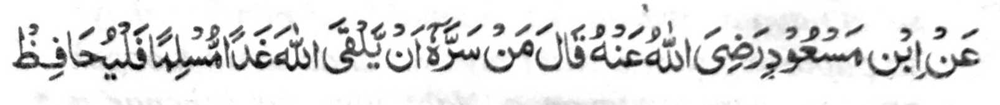
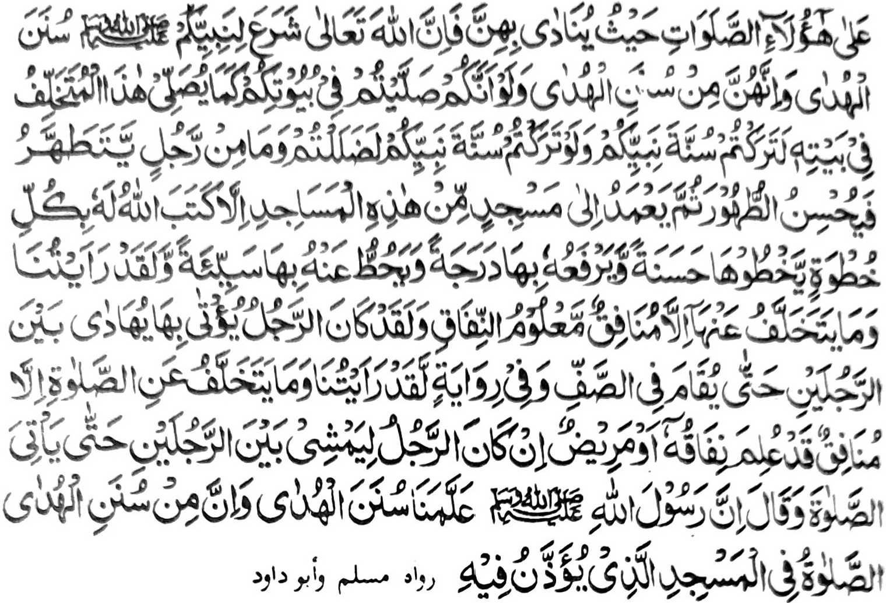

Miyaka thitayan si-i ko Ibn Mas'ood (Radhiallao Anho) a pitharo iyan, "Sa tao a aya kabaya iyan na mitho-ona iyan so Allah ko Gawi-i a Kaphangokom a sekaniyan na (maped ko manga) Muslim, na siyapan niyan angka-iya a manga Sambayang si-i ko darepa a inipananawagsiran non (ma'ana so Masjid). Mata-an a so Allah na piyaki-okitan Niyan ko Nabi Niyan so manga paparangayan a toro-an go mata-an a siran (a manga Sambayang) na ped ko manga paparangayan a toro-an. Opama ka sekano na zambayang kano si-i ko manga walay niyo sa lagid o gi-i kazambayang ko manga walay ran o siran naya a miyawa (ko Sunnah), na minibagak iyo so paparangayan o Nabi niyo na anda den i kibagak niyo ko paparangayan o Nabi niyo na sabenar a miyadadag kano. Anda deni kapagabdas o isa rekano a phiyapiya-an niyan so adbas iyan oriyan niyan na somong sa Masjid a ped sangka-iya a manga Masjid na miyatangked a pakisorat o Allah a bagi-an niyan ko omani milakad iyan so isa a mapiya go iporo so pangkatan niyan sa isa a pangkatan go ponasen rekaniyan so isa a marata. Go saben-sabenar a miya-ilayami a da-a a zorang si-i (a kazambayang sa Barajoma) inonta so manga Munafiqa katawan so kamomonafiq iran. Sabenar a aden a manga tao a pephakatalingoma (sa Masjid) a a-arain a dowa mama taman sa pakatindegen ko Sa-ap." Go so isa a kiyapanothol iyan na, "Sabenar a miya-ilayami a da-a pembelag ko Sambayang inonta so manga Munafiq a sabenar a katawan so kababaloy niyan a Munafiq go so kadada-alan a pekhasakit a aya pezowa-an niran na ma-a-aray a dowa a mama taman sa makatalingoma a pezambayang " Go pitharo iyan, "Mata-an a so Rasulollah (Sallallaho Alaihi Wasallam) na piyangenda-o kami niyan sa manga okit okit a toro-an go mata-an a ped ko manga okit o toro-an so kazambayang sa Masjid a ron piyagebangan ".
Giya-i tanda ko tanto a kasisiyapa o manga Sahabah ko Sambayang iran a barajoma’. Apiya so pekhasakit na phagowiten sa Masjid apiya antona-a i kakhaparo niyan, apiya baden ma-a-aray a dowa a mama. Giya-i na kialayaman niran sabap ko kiya-ilaya iran a soden so Nabi (Sallallaho 'Alaihi Wasallam) i tanto ron a thotomangked. Miyapanothol a si-i ko gi-i kazakaratal-maot o Nabi (Sallallaho 'Alaihi Wasallam), na lalayon sekaniyan pekhada-an sa tanod, ogaid na miyagaga niyan a makapagabdas ko miyakapira niyan katepengi, na minsan pen marege-regen a kapephaka-tindeg iyan, na miyakasong sa Masjid a a-arayin o Abbas (Radhiallao ’Anho) ago aden a ped iyan. So Abu Bakr (Radhiallao ’Anho) na aya miyag-imam ko Sambayang a pandoan o Nabi (Sallallaho 'Alaihi Wasallam), na sekaniyan na baden miyamangeped ko Barajoma ko manga ma-amom.
So Abu Darda (Radhiallao 'Anho) na piyanothol iyan a miyaka-isa na pitharo-on o Nabi (Sallallaho 'Alaihi Wasallam), "Simba angka so Kadnan ka sa lagid o bangka Sekaniyan minda-darepa-i, go bilangen ka a ginawang ka ko miyamatay, go pananggila-ingka so paninta o manga tao a kasasalimbotan go, apiya bakaden pephakadola sa Masjid na obangka mibagak so Barajoma ko 'Isha ago Soboh.”
Miya-aloy ko isa pen a Hadith, "So 'Isha go so Soboh na tanto a mapened ko manga Munafiq O katawi ran so balas o Barajoma na somong siran sa Masjid ka an siran makaped ko Barajoma apiya ba siran den pephakadola."